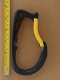

| Image | Summary | ||||
|---|---|---|---|---|---|
 | Petzl Caritool v1 | asymmetric D | n/a | n/a | the original one-piece harness mounted tool carabiner |
|  | Petzl Caritool L v2 | asymmetric D | n/a | n/a | 2nd gen large one-piece harness mounted tool carabiner |
 | Petzl Caritool S v2 | asymmetric D | n/a | n/a | 2nd gen one-piece harness mounted tool carabiner |